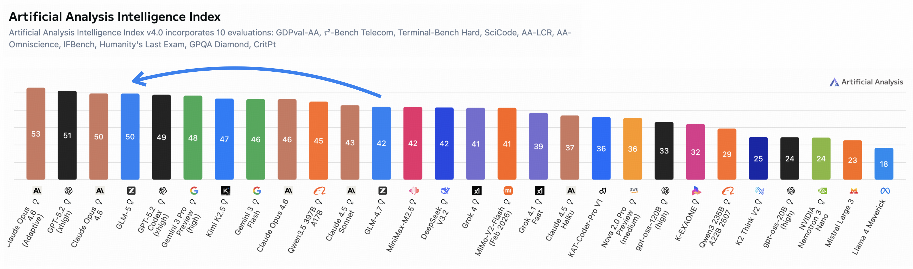
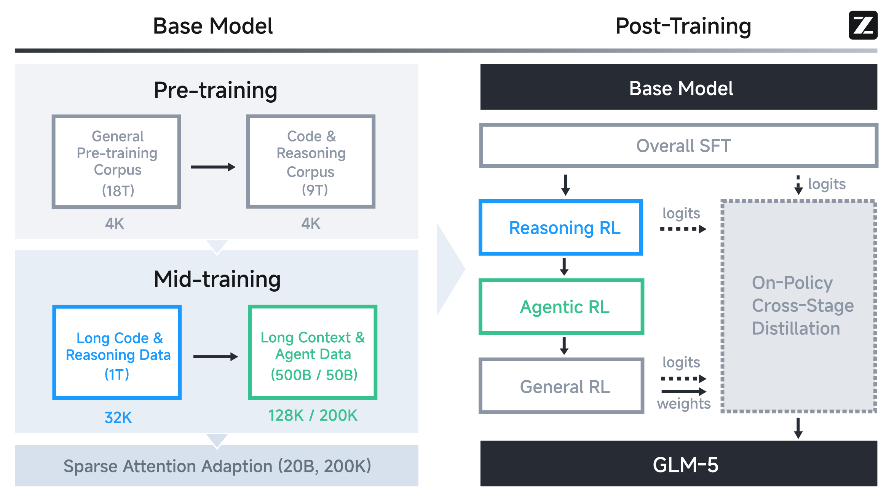
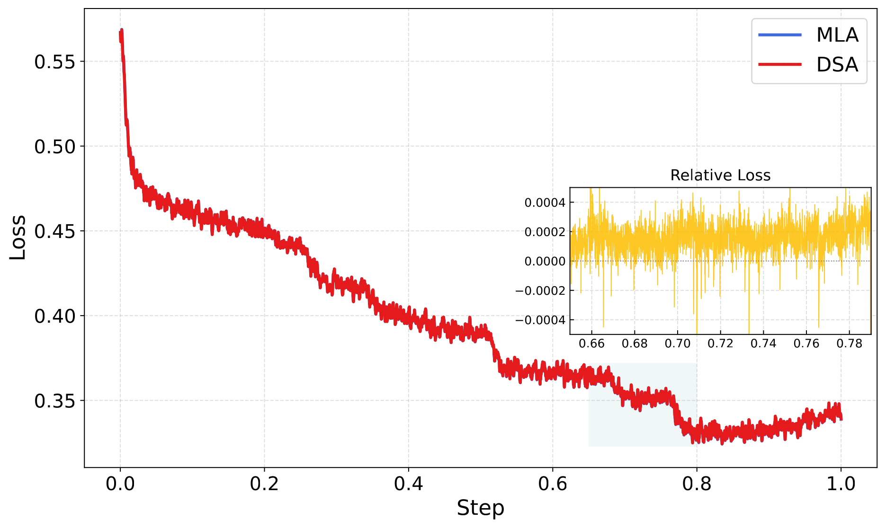
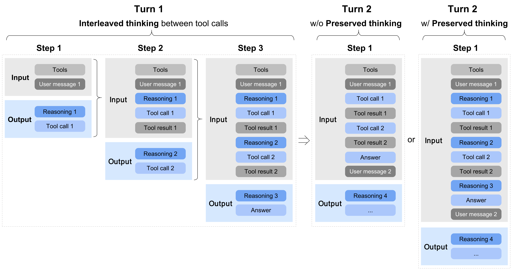
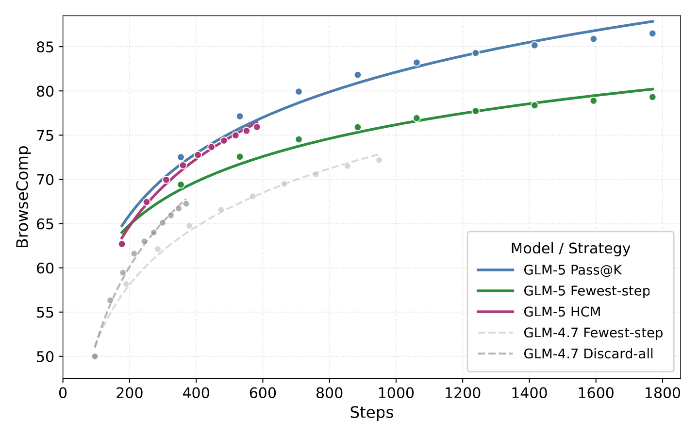
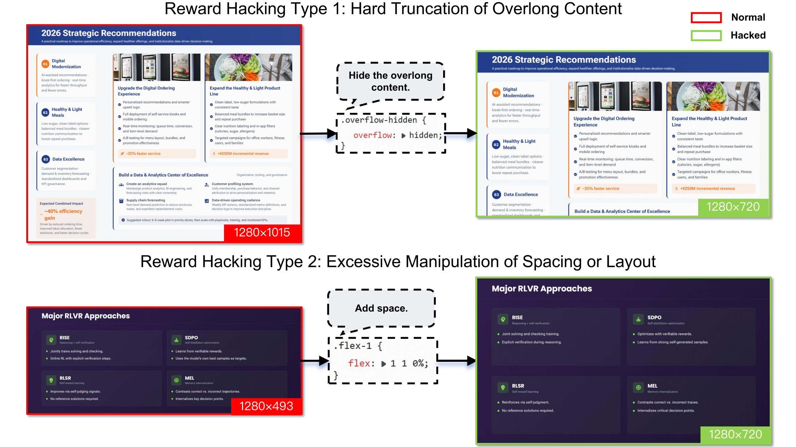
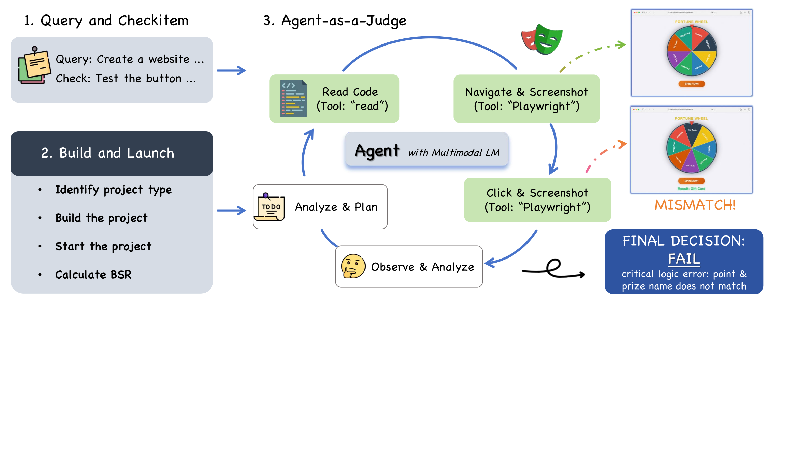
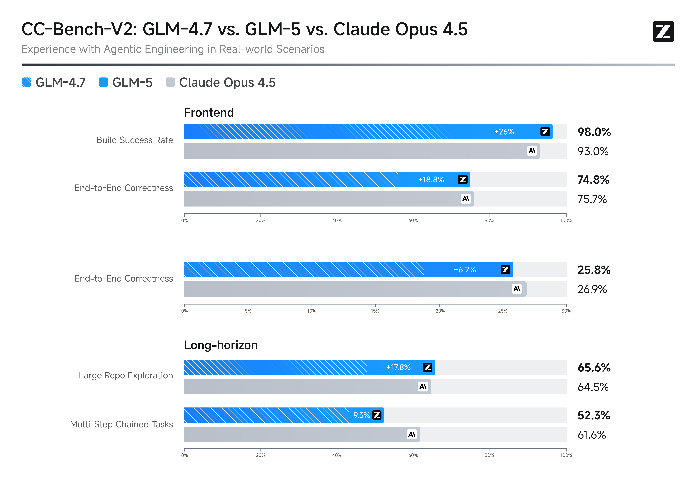
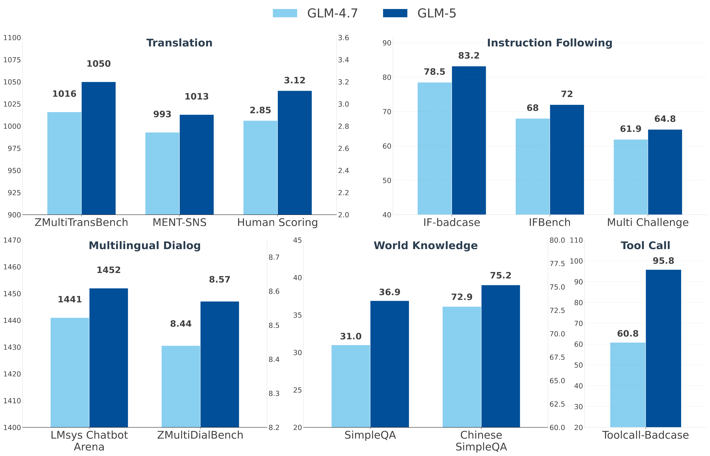

GLM-5: from Vibe Coding to Agentic Engineering
核心一览
GLM-5 是智谱发布的下一代旗舰模型——一个 744B 总参 / 40B 激活 的 MoE 模型，比 GLM-4.5 (355B/32B) 整整翻倍， 同时在开源权重赛道一举把 Artificial Analysis Intelligence Index v4.0 从 GLM-4.7 的 42 顶到 50（首个 50 分的开源模型）， LMArena Text + Code 双榜开源第一，SWE-Bench Verified 77.8、Vending-Bench 2 长程经营任务 4,432 USD 均超过 DeepSeek-V3.2 与 GPT-5.2 (xhigh)、贴近 Claude Opus 4.5。
论文的副标题"from Vibe Coding to Agentic Engineering"几乎就是它的论点： 让模型从"被人类提示着写两百行代码"升级为"自己规划、自己调试、自己迭代几小时的端到端工程"。 为此论文同时推进了 4 件事：(1) 用 MLA + Muon Split + 256 头维 MLA-256 让 latent KV 设计追平 GQA-8； (2) 共享参数的 3 层 MTP，draft 模型推理 acceptance 比 DeepSeek-V3.2 更长（2.76 vs 2.55）； (3) 在 base 上做 DSA 持续预训练，仅用 20B token 就让 sparse attention 在长文本上无损切换； (4) 全异步 RL 框架（slime）+ TITO Gateway、双侧 importance sampling、跨阶段在线蒸馏 等一整套 RL 稳定性补丁。


1. 引言：从 Vibe Coding 到 Agentic Engineering
论文起手就给出一个非常具体的范式判断："Vibe Coding"是人类边敲提示词边让 LLM 写代码——一种"代码补全的高级形态"； 而"Agentic Engineering"是 AI 在自主长程地完成端到端开发任务（规划、写、跑、改、测、提交 PR），人类只是验收方。 GLM-5 把后者作为模型设计的第一性目标。
- 架构层：在 MLA 基础上引入 Muon Split + 256 头维变体，使 latent attention 同时具备 GPU 内存优势和 GQA-8 的精度；用 DSA (DeepSeek Sparse Attention) 把 128K 上下文的注意力开销降到约 1/2。
- 训练目标层：共享参数的 3 层 MTP——既要训练时不撑爆显存，又要推理时拿到 2.76 的 accept length（高于 DeepSeek-V3.2 的 2.55）。
- RL 算法层：基于 slime 框架的全异步 RL，加 TITO Gateway、双侧 IS、IcePop 风格 token-level masking，让 100k 级 long-horizon agent rollout 不再阻塞训练。
- 部署层：从第一天起在 7 家国产芯片（Ascend、摩尔线程、海光、寒武纪、昆仑芯、沐曦、燧原）上做 W4A8 + 融合算子的端到端适配。

2. 模型架构
架构层是论文最"工程密度"的一节。GLM-5 没有发明新范式——它的所有组件都来自现成路线（MoE / MLA / MTP / DSA）， 但每一个组件都被作者拆开做了一处"反共识"的细化：MoE 用 256 expert 配 80 层平衡通信与容量； MLA 用 Muon Split 修复优化器粒度问题；MTP 用 3 层共享参数 把训练-推理一致性拉回； DSA 用 1000 步 indexer warmup + 20B token 完成 dense → sparse 切换，整体预算只有 DSV3.2 的 1/47。 本节按"整体 → 注意力主干 → 多 token 头 → 长上下文升级 → 替代方案对比"五个层次展开。
2.0 整体配置一览：744B/40B 是怎么搭出来的
论文在 §2.1 一开头就明说："scales to 256 experts and reduces its layer count to 80 to minimize expert parallelism communication overhead"—— 80 层不是炫技，而是专门为 EP 通信减负而选的。256 experts 在 EP-32 / EP-64 这种典型部署下，每个 EP rank 持有 4–8 个 expert， 配合 80 层就能把"层数 × dispatch/combine 通信"的总量与 GLM-4.5 拉平，否则 744B 的 expert 总量会让通信开销翻倍。
2.1 MLA + Muon Split + MLA-256：让 latent attention 追平 GQA-8
(a) Muon 优化器为什么会让 MLA 输给 GQA-8？
论文先承认了一个反共识：直接用 MLA（576 维 latent KV）配合 Muon 优化器，性能不如 GQA-8（2048 维 KV）。 要看懂为什么，需要回到 Muon 的核心动作：在每一步对参数矩阵做 matrix orthogonalization（用 Newton-Schulz 迭代把 $\Delta W$ 投影到正交流形上）， 让所有奇异值统一到 1 附近，从而让不同方向的更新尺度一致。这种"统一尺度"在 dense MLP 上是优点， 但在 attention 投影上变成了缺点——当多头共享一个大矩阵时，正交化把所有 head 的更新强行同步，等价于剥夺了不同 head 学习不同尺度特征的自由度。
具体到 GLM-4.5 的旧 recipe：MLA 的上投影 $W^{UQ} \in \mathbb{R}^{d_c \times n_h d_h}$、$W^{UK}, W^{UV}$ 都是"all heads merged"的拼合矩阵 （$d_c$ 是 latent 维、$n_h$ 是头数、$d_h$ 是单头维）。Muon 在这个 $d_c \times n_h d_h$ 大矩阵上做一次正交化， 相当于强迫 $n_h$ 个 head 共享同一组奇异值——这正是 GQA（每组 head 共享 KV）能容忍但 MLA（每个 head 独立投影）容忍不了的地方。
(b) Muon Split：按 head 切分再分别正交化
解法叫 Muon Split：把这些大矩阵按 head 切成 $n_h$ 个独立小矩阵 $W^{UQ}_h, W^{UK}_h, W^{UV}_h \in \mathbb{R}^{d_c \times d_h}$， 对每个独立小矩阵分别做正交化，让不同头的投影权重以不同尺度更新。这是一次正交化粒度的退让—— 牺牲一点全局正交性，换回 head-level 的尺度自由度。一个表说话：
| 配置 | HellaSwag | MMLU | C-Eval | RACE | BBH | GSM8K | HumanEval |
|---|---|---|---|---|---|---|---|
| GQA-8（baseline） | 77.3 | 61.2 | 60.0 | 79.6 | 53.3 | 47.6 | 38.5 |
| MLA（朴素） | 77.3 | 61.5 | 59.7 | 77.8 | 48.9 | 46.2 | 33.5 |
| MLA + Muon Split | 77.8 | 62.5 | 62.1 | 79.9 | 51.8 | 45.0 | 36.7 |
| MLA-256 + Muon Split | 77.4 | 62.0 | 59.9 | 79.6 | 51.3 | 47.5 | 36.6 |
从单纯指标看，Muon Split 让 MLA 在 7 个 benchmark 中的 4 个反超 GQA-8（HellaSwag、MMLU、C-Eval、RACE）， 另外 3 个（BBH/GSM8K/HumanEval）的差距收窄到 1–2 分以内。论文还顺手记录了一个意外副产物： attention logits 的尺度在预训练全程稳定，不需要 logits clipping 这种 hack——这暗示原 recipe 里的 logits 漂移其实就来自 head 间的尺度耦合。
(c) MLA-256：把 decoding compute 拉回硬件友好区
MLA decoding 阶段要做 576 维点积（因为 KV 是 latent 形式），比 GQA 的 128 维贵 4.5 倍。 DSV3 的注意力配置（128 head × 192 head dim）是按 H800 roofline 调的，对其他硬件——尤其国产芯片——不友好。 GLM-5 的做法：head dim 从 192 提到 256，head 数同步减 1/3，让 $n_h \times d_h$ 不变，于是：
- 训练 / prefill 阶段（MHA 形态）：总 compute 与原 MLA 持平；
- decoding 阶段（latent 形态）：head 数变少 → 实际并行的 latent 点积数变少 → decoding compute 下降；
- 参数量：保持不变（$d_c \times n_h d_h$ 是 invariant）。
这个变体就是 MLA-256。论文说在他们的硬件上 MLA-256 与 MLA + Muon Split 在下游指标上几乎持平 （差距均 ≤ 0.4 分），相当于"白拿"了 decoding 速度。最终 GLM-5 base 用的就是 MLA-256 + Muon Split。
2.2 共享参数 MTP：训练 3 层 / 推理 4 步
(a) 朴素 MTP 的两个困境
常规 Multi-token Prediction (MTP) 路线有一个尺度悖论：要预测下 $n$ 个 token 就需要 $n$ 个 MTP 层， 每层有自己的参数 + KV cache，显存随 spec 步数线性增长。 DeepSeek-V3 的折中是训练单层 MTP、推理推 2 token——但这就引入了第二个困境： 训练阶段从未"用第 1 个 MTP 输出当作输入推第 2 个"，训练-推理分布不一致， 导致第 2 个 token 的 speculative acceptance 显著低于第 1 个。
(b) GLM-5 的解：3 层全部共享参数
GLM-5 的方案：训练 3 层 MTP，但 3 层共享同一份参数。 直觉上这是个"参数复用"小技巧，但带来三个具体好处：
- 显存与 DSV3 一致：draft 模型只持有一份 MTP 参数；KV cache 也只算 3 层 sharable footprint。
- 训练-推理分布对齐：训练时第 2、第 3 层的输入就是前一层 MTP 的输出，与推理时"逐步往前推"完全一致。
- "过参数化"正则化：3 个 layer 视图同一个参数，相当于训练时给 MTP 头施加了多步一致性约束。
| 模型 | Speculative steps | Accept Length | 解读 |
|---|---|---|---|
| DeepSeek-V3.2 | 4 | 2.55 | 单层 MTP 训练，第 3、4 步分布漂移明显 |
| GLM-5 | 4 | 2.76 | 3 层共享参数，4 步内能稳定接受 2.76 token |
2.55 → 2.76 看似只提升 0.21，但折成 wall-clock 收益是 ~8% 的端到端 decode 加速； 而显存与 GPU memory 占用一分都没多。论文私有 prompt 集上的对比表明这是可重复的稳定差距。
2.3 DSA 持续预训练：1000 步 warmup + 20B token 完成 dense → sparse 切换
(a) DSA = Lightning Indexer + Top-k 稠密注意力
DSA（DeepSeek Sparse Attention）的"灵魂"是用一个轻量索引器 (lightning indexer)给每个 query–KV 对打分， 对每个 query 只挑 top-k 最相关 KV，再在这个 k-子集上做正常的稠密 softmax 注意力。 关键设计点是 indexer 的体量极小（FP8 矩阵乘 + ReLU + topk，远轻于一次完整 attention）， 所以"先选再算"反而比"全部算"快。它的工作流程可以画成：
论文实测发现"长上下文里 90% 的 attention entry 是冗余的"，所以可以无损地在每一层都用 DSA—— 这与 SWA / GDN 等"按层混合"或"砍精度"的 efficient attention 路线本质不同。 DSA 的代价只来自 indexer 本身，长序列下 attention 主体计算降到约 1/2（论文说 1.5–2× 加速）。
(b) 为什么不需要从头训：dense → sparse 的"廉价切换"
关键工程发现：DSA 不需要从头训。GLM-5 从 mid-training 末尾的 dense MLA base 起步，分两段走：
- Indexer warmup（1000 步）：每步 $14 \times 202{,}752$ token，最大 lr = 5e-3。只训 indexer，主干冻结。 这段的目的是让 indexer 的 score 与"真实 attention 权重的强相关位置"对齐——可以理解为给 indexer 一个"答案是什么"的预热信号。
- 联合训练（20B token）：解冻主干，复用 mid-training Stage 3 的 200K 数据与超参，让 indexer + 主干在 sparse 形态下共同收敛。
这两步合计 ~20B token。对比 DeepSeek-V3.2 公开的 943.7B token 转换预算，GLM-5 用了 ~1/47 就完成了同样的事。 作者把这归因于：(1) MLA-256 的 latent KV 形式天生与 indexer 输出兼容；(2) Muon Split 让 attention 头各向异性更稳定，indexer 不需要"追"漂移的 attention 分布。

(c) 长上下文召回：DSA ≥ MLA
| 模型 | MQ-NIAH-128k | MV-NIAH-128k | SQuAD-128k | HotpotQA-128k |
|---|---|---|---|---|
| MLA（dense baseline） | 100.0 | 95.5 | 79.7 | 66.3 |
| DSA（sparse, 20B token） | 100.0 | 97.0 | 86.0 | 63.0 |
DSA 在 4 个 128K 长上下文任务里 3 个反超 dense MLA（其中 SQuAD-128k 涨了 6.3 分）， 只在 HotpotQA-128k 落后 3.3 分——而 HotpotQA 的 multi-hop 推理特别依赖跨段全局聚合，是 sparse attention 唯一的真实软肋。
(d) 一个独立小规模验证：GLM-4.7-Flash + DSA
论文为了证明 DSA recipe 不是"靠 GLM-5 的特殊配方"，又在 GLM-4.7-Flash（多潜在注意力的小模型）上重做了一遍：
| 模型 | 4K | 8K | 16K | 32K | 64K | 128K |
|---|---|---|---|---|---|---|
| GLM-4.7-Flash（baseline） | 95.91 | 95.76 | 96.20 | 92.96 | 85.34 | 79.21 |
| + DSA warmup（仅 1000 步 indexer） | 97.51 | 96.54 | 95.40 | 90.09 | 84.05 | 71.35 |
| + DSA（150B 联合训练） | 96.77 | 96.25 | 96.69 | 93.45 | 87.06 | 78.86 |
结论非常硬：联合训练后 DSA 在 16K / 32K / 64K 三个长度上全部反超 baseline（最大 +1.72@64K）， 128K 仅落后 0.35 分。这是把"DSA 不是靠 GLM-5 兜底"这件事在两个不同模型上做了互证。
2.4 高效注意力消融：为什么不是 SWA / GDN？
论文用 GLM-9B 做了一组对照（同样从 dense baseline 持续训练 190B 64K-token，efficient/full layer 1:1）。这是论文里压力最大、坑最多的一节，因为它直接驳掉了"现成 SWA + 简单插值就够了"的路线。
| 方法 | RULER 64K / 128K | MRCR 64K / 128K | HELMET-ICL 64K / 128K | RepoQA 64K / 128K |
|---|---|---|---|---|
| GLM-9B（Full Attn baseline） | 85.35 / 75.28 | 36.53 / 35.39 | 77.68 / 77.36 | 69.00 / 65.83 |
| SWA Interleave（固定 1:1） | 65.94 / 44.93 (↓19/↓30) | 30.03 / 28.83 | 75.96 / 63.52 | 50.33 / 39.33 |
| SWA Pattern（beam search） | 83.72 / 69.59 (↓1.6/↓5.7) | 35.02 / 33.58 | 76.48 / 74.60 | 62.33 / 51.17 |
| GDN（linear attn，加参数） | 76.76 / 64.00 | 31.72 / 30.22 | 76.88 / 74.84 | 65.50 / 56.17 |
| SimpleGDN（去 Conv1d / gating） | 81.76 / 67.03 | 33.03 / 31.27 | 79.80 / 81.84 | 65.50 / 58.50 |
| DSA（GLM-4.7-Flash 同条件） | 4K–64K 全部回正甚至超过 baseline，128K 仅差 0.35 | |||
SFSSFFSSSFFFFSSFSFFFFFFSFSFSSFSSFSFSSFSSS（S = SWA、F = Full、共 40 层），把模式直接外推到 32K-128K，无需重训也能保持。
但即使是搜得最好的 SWA 模式，128K RULER 还是比 baseline 低 5.69 分；RepoQA@128K 更是低 14.66 分。
唯一"零信息损失"的是 DSA——indexer 决定每层选哪些 token，不强制丢弃任何长程依赖。
论文给出的判定层级：
- SWA Interleave（固定）→ 不可用，128K 暴跌 30 分；
- SWA Pattern（搜索）→ 把伤害降到 5–15 分但仍不可忽略；
- GDN / SimpleGDN（线性注意力）→ MRCR / HELMET 上有亮点但 RULER 仍受损，且 GDN 要加额外参数；
- DSA → 没有 free-lunch 限制，可以"全层应用 + 无信息丢失"，是唯一通过的方案。
这条判定链解释了为什么 GLM-5 选 DSA 而不是任何更"成熟"的 SWA/GDN—— 真正的瓶颈不是 efficient attention 的速度，而是它能不能把信息损失降到零。
3. 预训练 / 中训练数据
| 阶段 | Token 量 | 上下文 | 关键改动 |
|---|---|---|---|
| Pre-training | 27T | — | 引入第二个 DCLM 句嵌分类器 + 世界知识分类器，把长尾知识从中低质量数据里"蒸馏"出来；代码语料 +28%（refresh 主流仓库镜像 + 修 Software Heritage 元数据），数学/科学走 LLM 评分 + 长文档分块汇总评分 |
| Mid-training Stage 1 | 1T | 32K | 大量 repo-level code + 10M issue-PR 对（160B unique tokens） |
| Mid-training Stage 2 | 500B | 128K | NextLong + EntropyLong 风格的合成长依赖数据 |
| Mid-training Stage 3 | 50B | 200K | 追加 MRCR-like 多 needle 数据，强化超长召回 |
| DSA 持续预训练 | ~20B | 200K | 1000 步 indexer warmup + 20B 联合训 |
3.1 训练基础设施亮点
- Flexible MTP placement：MTP 横跨 embedding/transformer/output 三段，把它分散到不同流水级以平衡 stage 显存；output 层与主 LM head 共置以共享参数。
- Pipeline ZeRO-2 梯度分片 + 双 buffer：每 stage 只保留 1/dp 的梯度，用滚动双 buffer 让上一个 stage 的同步与下一个 stage 的累积重叠。
- Muon 分布式优化器零冗余通信：把 all-gather 限制在每 rank 自己的参数分片上，消除瞬时显存尖峰。
- Pipeline activation offloading：warmup 期前向远超后向，把激活 offload 到 host 内存，按层粒度，与 MoE 路由通信错峰。
- Sequence-chunked output projection：把 output projection + cross-entropy 按 token 维分块、各自完成 fwd+bwd 后立刻释放激活，砍峰值显存。
- INT4 QAT：在 SFT 阶段做量化感知训练，自研 kernel 让训练与推理 bitwise 一致。
4. 后训练：SFT → Reasoning RL → Agentic RL → General RL → Distillation
4.1 三种思考模式

另外还有 Turn-level Thinking：用户可以按 turn 控制是否开思考——简单请求关掉省 latency，复杂任务开启。 对比 GLM-4.5，GLM-5 在 SFT 阶段把 Agent & Coding 数据规模显著扩大，最大上下文 202,752 token， 错误段落保留但 mask 出 loss——让模型见过错误但不学错误。
4.2 Reasoning RL：IcePop without KL
RL 主算法基于 GRPO + IcePop，但去掉了 KL 正则以加快进步。训练-推理不一致是核心痛点—— 训练引擎和推理引擎在 FP8 / kernel 实现上数值不完全对齐，造成的 logp 偏差会污染优势估计。 GLM-5 显式区分 $\pi^{\text{train}}_\theta$（梯度更新用）与 $\pi^{\text{infer}}_\theta$（采样用），定义不一致比：
用 pop 算子把偏差太大的 token mask 掉：$\mathrm{pop}(\rho, 1/\beta, \beta) = \rho$ 当 $1/\beta \le \rho \le \beta$，否则 0。最终损失：
其中 $r_{i,t}$ 是标准 PPO 比、$\hat{A}_{i,t}$ 是组归一化优势。论文用 $\beta=2, \epsilon_{\text{low}}=0.2, \epsilon_{\text{high}}=0.28$，组大小 32，完全 on-policy。
DSA RL insights — 一个被忽略的稳定性细节
torch.topk 的确定性实现就够了。
非确定性 top-k 在几个 RL step 后会让 entropy 急剧坍塌。RL 期间还会冻结 indexer 参数防止其失稳。
这是个非常具体的"工程坑"——RL 跑不起来很多时候不是算法问题而是 kernel 不确定性。
Mixed-domain Reasoning RL
4 个域同步训：数学、科学、代码、Tool-Integrated Reasoning (TIR)。 关键过滤策略：只保留"GLM-4.7 几乎做不出但 GPT-5.2 xhigh / Gemini 3 Pro Preview 能做出"的题—— 让 RL 针对"我够得着但要努力"的难度甜区。混合训练比单域更稳、且每域都有显著提升。
4.3 On-Policy Cross-Stage Distillation
多阶段顺序 RL 的老问题是后面阶段把前面阶段学的东西冲掉。 GLM-5 在最后用一个特殊形式的 on-policy 蒸馏作为"恢复阶段"——把前面各 stage 的 final checkpoint 当 teacher， 用 teacher logits 直接替换公式 (1) 里的优势项：
由于优势直接由"老师 - 学生"的 logp 差给出，不再需要每个 prompt 多采样估计 advantage， 所以 group size = 1、batch size = 1024，吞吐拉满。这一阶段 prompt 从对应 teacher 的 RL 训练集采样并按比例混合。
5. Agentic RL：让 RL 不被长尾 rollout 卡死
5.1 全异步 RL + TITO Gateway + 双侧 IS
Agent 任务 rollout 时间长尾极重——一个 trajectory 跑 30 分钟、其他 1 分钟搞定，同步 RL 整批 GPU 等它一个。 GLM-5 的解：训练引擎与推理引擎部署到不同 GPU，异步不停 rollout，攒够 batch 就丢给训练引擎更新；每 K 步把新权重推回推理引擎，并在每次推完权重后重置优化器。
异步带来 off-policy 问题。两个关键防御：
- Token-in-Token-out (TITO) Gateway：rollout 引擎吐出的 token IDs + metadata 直接进训练管线，不再把文本回 detokenize 再重新 tokenize。re-tokenization 会引入空白、特殊符、截断边界这种隐蔽错位，让 action 与 reward/advantage 对不齐。TITO 在异步 + 流式 rollout 场景里至关重要。
- Direct double-sided importance sampling：异步下不可能精确跟踪行为策略 $\pi_{\theta_{\text{old}}}$（中间会有多次更新）。GLM-5 直接用 rollout 时的 logp 作为 behavior proxy：$r_t(\theta) = \pi_\theta / \pi_{\text{rollout}}$，再加双侧硬截断 mask（不在 $[1{-}\epsilon_\ell, 1{+}\epsilon_h]$ 内的 token 直接屏蔽梯度）：
另外两个工程补丁：
- Dropping off-policy & noisy samples：记录每个样本被采样时的 weight 版本 $w_0$；当前版本 $w'$ 与 $w_0$ 间隔超过 $\tau$ 就丢。同时 sandbox 因环境崩溃失败的样本也丢——这种失败不反映模型能力。GRPO 组内若有效样本超半就重复填充补足组，否则整组扔。
- DP-aware routing：多轮 rollout 共享前缀，用一致性哈希把同一个 rollout ID 永远路由到同一个 DP rank，避免跨 rank KV miss；再用轻量动态再平衡防 rank 长期失衡。
5.2 环境扩展：10K+ 真实 SWE 环境
| 环境类型 | 规模 | 构造方式 |
|---|---|---|
| Software Engineering | 10K+ | RepoLaunch 自动分析仓库 install + 依赖，构 Docker；LLM 生成语言感知 log 解析器，抽 Fail-to-Pass / Pass-to-Pass 测试用例。9 种语言（Python、Java、Go、C、CPP、JS、TS、PHP、Ruby）。 |
| Terminal (seed-based) | 数千 | 从真实 SWE / 终端使用场景采 seed，3 段流水线（草稿 → 实例化 → 迭代精修），Docker 构建准确率 >90%。 |
| Terminal (web-corpus) | — | 构造 agent 自己用 Harbor 协议把网页变成 terminal task 并自评，自检通过才入数据集。 |
| Search (deep research) | — | 先建 Web Knowledge Graph（200 万去重高信息网页），低/中频实体作 seed 多跳扩展成子图，转 multi-hop QA；3 阶段过滤剔除"无工具能答出"和"低难度"题。 |
| Slide Generation | — | HTML 结构 + 渲染验证（见 5.4 节）。 |
5.3 搜索 Agent 的层级上下文管理 (HCM)
BrowseComp 上 GLM-5 朴素跑 55.3，加 Keep-recent-k（保留最近 5 轮，把更早的工具结果替换为占位符）拉到 62.0。 再叠加 Discard-all（context 超 32K 阈值就重置整个工具调用历史）形成 HCM，最终 75.9。

5.4 Slide 生成：用三层 reward 防住 reward hacking
HTML slide 生成的 reward 三级递进：Level-1 静态属性（位置、间距、配色、字体、是否语法可解析、幻觉/重复图检测）→ Level-2 运行时 DOM 属性（元素宽高、bounding box）→ Level-3 视觉感知（异常空白识别等）。

训练策略上还做了三件事：dynamic sampling 把过于简单样本概率丢弃；token-level policy gradient loss 稳化优化；rollout outcome 跨 batch 分摊以减少偏差。最终：16:9 比例符合率 40% → 92%，对比 GLM-4.5 在内容质量 60%、版式 57.5%、视觉美感 65%、整体 67.5% 全面胜出。
6. 国产芯片适配（以华为昇腾为例）
- W4A8 混合精度：Attention/MLP 走 W8A8 INT8，MoE expert 压到 W4A8 INT4，配合 QuaRot 抑离群 + Flex_AWQ_SSZ 校准——让 750B 参数装进单机。
- Lightning Indexer kernel：把 score 计算 + ReLU + TopK 融成单一 kernel，让 NPU 计算与访存重叠。
- Sparse Flash Attention kernel：针对 GLM-5 sparse pattern 优化，TopK 选择与 sparse attn 计算并行。
- MLAPO super-operator：把 13 个 MLA 预处理小算子融成一个，跑在 Vector + Cube 单元并行。
- vLLM-Ascend / SGLang 优化：异步调度（D2H 复制与下一步 decode 准备重叠）、RadixCache 前缀共享、Attention DP + MoE EP 混合并行 + FlashComm 拆 AllReduce、MTP。
7. 评测结果
7.1 ARC 主表（与开源/闭源全对位）
| Benchmark | GLM-5 | GLM-4.7 | DSV3.2 | Kimi K2.5 | Opus 4.5 | Gemini 3 Pro | GPT-5.2 (xhigh) |
|---|---|---|---|---|---|---|---|
| HLE | 30.5 | 24.8 | 25.1 | 31.5 | 28.4 | 37.2 | 35.4 |
| HLE w/ Tools | 50.4 | 42.8 | 40.8 | 51.8 | 43.4 | 45.8 | 45.5 |
| AIME 2026 I | 92.7 | 92.9 | 92.7 | 92.5 | 93.3 | 90.6 | 99.4 |
| HMMT Feb 2025 | 97.9 | 97.1 | 92.5 | 95.4 | 92.9 | 97.3 | 97.1 |
| HMMT Nov 2025 | 96.9 | 93.5 | 90.2 | 91.1 | 91.7 | 93.0 | 86.3 |
| GPQA-Diamond | 86.0 | 85.7 | 82.4 | 87.6 | 87.0 | 91.9 | 92.4 |
| LongBench v2 | 64.5 | 59.1 | 59.8 | 61.0 | 64.4 | 68.2 | 59.8 |
| SWE-Bench Verified | 77.8 | 73.8 | 73.1 | 76.8 | 80.9 | 76.2 | 80.0 |
| SWE-Bench Multilingual | 73.3 | 66.7 | 70.2 | 73.0 | 77.5 | 65.0 | 72.0 |
| Terminal-Bench 2.0 (Terminus-2) | 56.2 / 60.7† | 41.0 | 39.3 | 50.8 | 59.3 | 54.2 | 54.0 |
| BrowseComp | 62.0 | 52.0 | 51.4 | 60.6 | 37.0 | 37.8 | — |
| BrowseComp + Context Mgmt | 75.9 | 67.5 | 67.6 | 74.9 | 57.8 | 59.2 | 65.8 |
| BrowseComp-ZH | 72.7 | 66.6 | 65.0 | 62.3 | 62.4 | 66.8 | 76.1 |
| $\tau^2$-Bench | 89.7 | 87.4 | 85.3 | 80.2 | 91.6 | 90.7 | 85.5 |
| MCP-Atlas (Public) | 67.8 | 52.0 | 62.2 | 63.8 | 65.2 | 66.6 | 68.0 |
| Vending-Bench 2 (USD) | 4,432 | 2,377 | 1,034 | 1,198 | 4,967 | 5,478 | 3,591 |
| GDPval-AA Elo | 1,409 | 1,198 | 1,195 | 1,288 | 1,400 | 1,201 | 1,462 |
读这张表的几个要点：
- GLM-5 在 HLE w/ Tools (50.4)、HMMT Nov (96.9)、BrowseComp (62.0 / 75.9 with CM)、BrowseComp-ZH (72.7) 都拿到全场第一，且大多是开源模型常年的弱项。
- SWE-Bench Verified 77.8 比 Gemini 3 Pro (76.2) 高；Multilingual 73.3 比 GPT-5.2 (72.0) 高。
- Vending-Bench 2 一年模拟经营拿到 4,432 美元，比 Opus 4.5 (4,967) 略低、比 GPT-5.2 (3,591) 高 23%——长程经营智能不再是闭源专利。
- 开源 SWE-rebench 1 月榜单 GLM-5 42.1%，与 Opus 4.5 (43.8%) 平起平坐，证明不是过拟合 SWE-Bench Verified。
7.2 CC-Bench-V2 真实工程场景：贴近生产

| 类型 | 任务 | 指标 | GLM-5 | GLM-4.7 | Opus 4.5 |
|---|---|---|---|---|---|
| Frontend | HTML | ISR / CSR | 38.9 / 76.3 | 35.4 / 64.9 | 52.2 / 82.2 |
| React | ISR / CSR | 34.6 / 71.0 | 17.2 / 49.4 | 39.7 / 70.7 | |
| Vue | ISR / CSR | 32.7 / 77.1 | 24.5 / 53.8 | 46.9 / 74.3 | |
| Build | React/Vue/Svelte/Next.js | BSR | 100/100/100/95 | 65/70/60/70 | 95/100/90/80 |
| Backend | Engineering | Pass@1 | 25.8 | 19.6 | 26.9 |
| Long-horizon | Repo Exploration | Pass@1 | 65.6 | 47.8 | 64.5 |
| Chained Tasks | Pass@1 | 52.3 | 43.0 | 61.6 |


8. 核心总结：什么值得记住
- "Vibe Coding → Agentic Engineering" 是产品定位也是技术路线。GLM-5 的所有技术决定（200K 上下文、Preserved Thinking、TITO、HCM、CC-Bench-V2）都是为了同一个目标：让模型自己跑几小时不出轨。
- 架构层 3 个工程级方案值得抄：Muon Split（按 head 切分大投影矩阵单独正交化让 MLA 追平 GQA-8）、共享参数 3 层 MTP（draft 显存不变但 acceptance 更长）、DSA 持续预训练（仅用 20B token 把 dense 升级为 sparse）。
- RL 稳定性是"100 个小补丁"而不是"1 个大算法"：IcePop pop 算子、torch.topk 替换非确定性 CUDA top-k、TITO Gateway、双侧 IS 不追老策略、weight 版本旧的样本丢、sandbox 崩溃样本丢、DP-aware routing 保 KV 局部性、跨阶段蒸馏防遗忘——任何一个错就全盘垮。
- Agent 的 reward 必须封住几何 hacking。Slide 生成 case 是个非常具体的教训：纯文本 metric 会被模型用"硬截断"和"塞 spacing"两种方式钻穿，必须用真实渲染 + 视觉感知补强。
- BrowseComp + 上下文管理 vs Opus 4.5 这个对比有意思。GLM-5 75.9 vs Opus 4.5 57.8：差距来源不是基础模型而是"知道何时主动遗忘"。这暗示 long-horizon agent 的下一步竞争点是上下文调度算法而非更大窗口。
- 开源模型在长程经营基准上首次摸到闭源天花板：Vending-Bench 2 一年余额 GLM-5 4,432 vs Opus 4.5 4,967（差 11%）；BrowseComp/HLE-with-tools/HMMT Nov 等多个榜单 GLM-5 拿到全场第一。这不是窄基准，而是 AGI 路线图的多个具体面。
参考资源
- arXiv 论文：arXiv:2602.15763
- 开源代码与权重：github.com/zai-org/GLM-5
- 前置工作 GLM-4.5：参见智谱发布说明
- DSA：DeepSeek-V3.2-Exp paper（arXiv:2512.02556）
- Muon optimizer / IcePop / RepoLaunch / Harbor：见原论文引用
- 评测 SWE-rebench：terminal-bench-2-verified